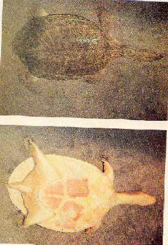

|
Digitized
Inventory of Animal Resources: Reptilia |
Chitra indica
Taxonomic
Details
----- Scientific Name
----- Classification
----- Synonyms
----- Common Names
Other
Biological Details
----- Habit and
Habitat
----- Distribution
---------- Extent of
Occurrence
---------- Area of
occurrence
---------- Altitude
---------- Population
-----
Conservation Status
-----
Diagnostic
Features
-----
Breeding system
Miscellaneous
Information
Literature
Family :
Classification:
Genus : Chitra Gray 1844
Chitra indica ( Gray 1831 )
Synonyms:
Common Names: Narrow
headed soft shelled turtle
Other Biological Details Threat : Suspected to be threatened on account of excessive killing of adults and over exploitation of eggs.
Highly aquatic inhabiting deep turbid rivers but frequently seen basking on sandy banks or resting in shallow water with its head striking out of water. Omnivorous, feeds on fish, mollusks, frogs and crustaceans. Prominent scavenger also.
Ganga, Sind and Mahanadi River systems. Common in Nepal also
Extent of Occurrence
Area of occurrence: Bihar, Uttar Pradesh, Orissa, Madhya Pradesh
Altitude:
Population:
Conservation status: Endangered
due to exploitation, Appendix – I of CITES
Size :
Very large, soft shelled turtle with an oval shell and reaches
up to 45 cm in length
Body :
Head is comparatively large and broad with dorso laterally situated eyes
and quite thick and somewhat elongated proboscis. Snout equal to the diameter of
the orbit.
Limbs
:
Anteterior limbs of epiplastra long and slender, in contact with or
narrowly separated from one another, four plastral callosities, hypo plastral
and xiphi plastral are well developed in the fully grown adults.
Limbs are with three claws.
Tail
:
. Tail is short in both sexes
Carapace
:
All plates of carapace is coarsely pitted and vermiculated
Colouration : Dorsal colouration is olive green, carapace is dull olive or greenish with irregular dark reticulations; plastrons is ivory white, head is greenish, with a black longitudinal streak from between eyes on to the nape and three oblique black streaks on either side diverging from it; another streak starting from behind the eye. Juveniles are greenish with reticulated pattern of four irregular ocelli on the carapace, some times with black longitudinal line on top of the head.
Breeding system:
.Nesting : Breeding takes place in late September to October. Clutch size not known, but lays on the sand banks of the rivers.
